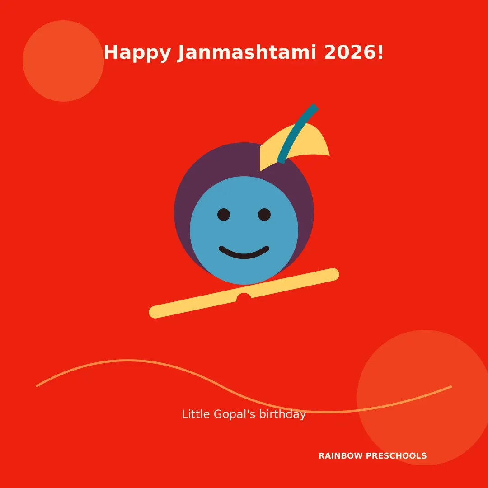
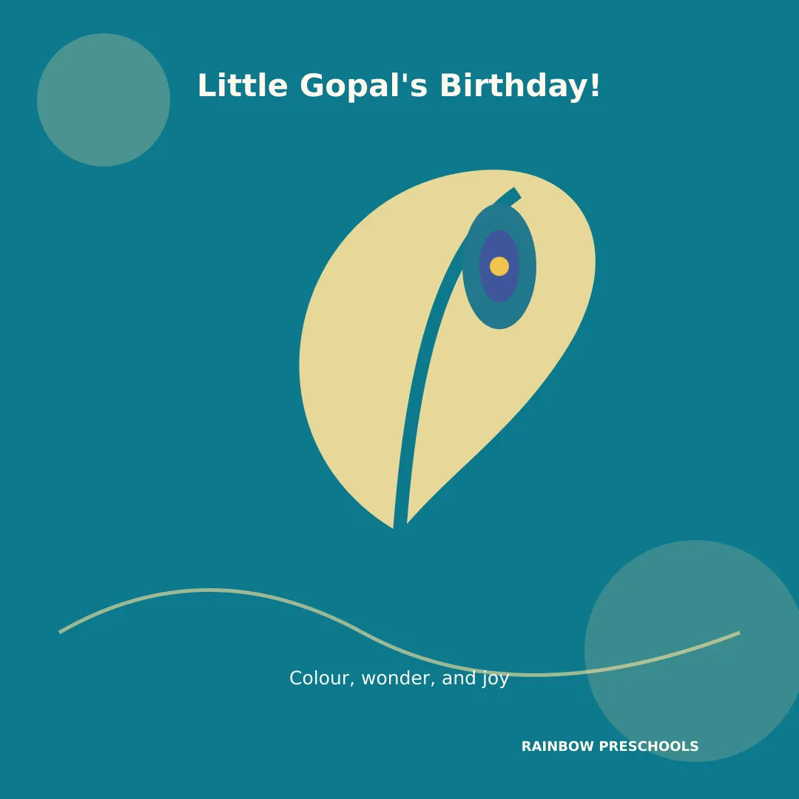
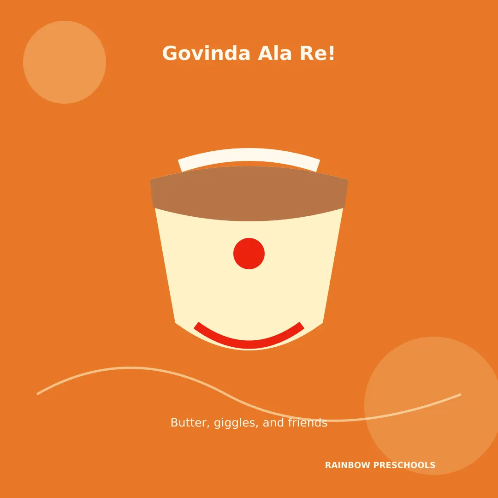
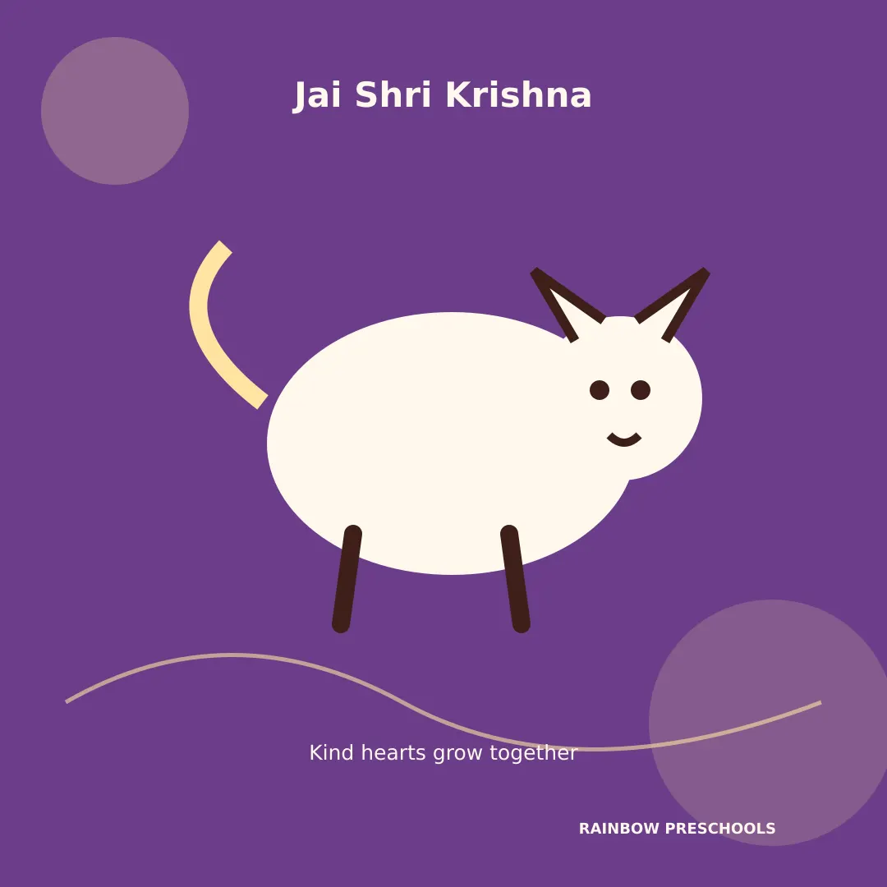
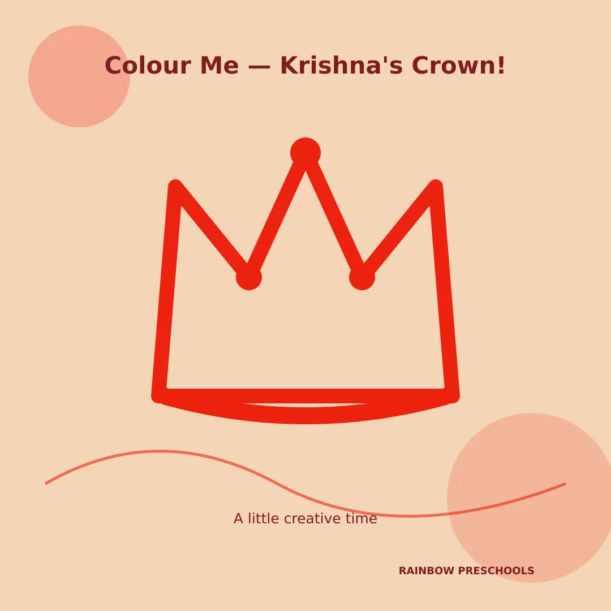
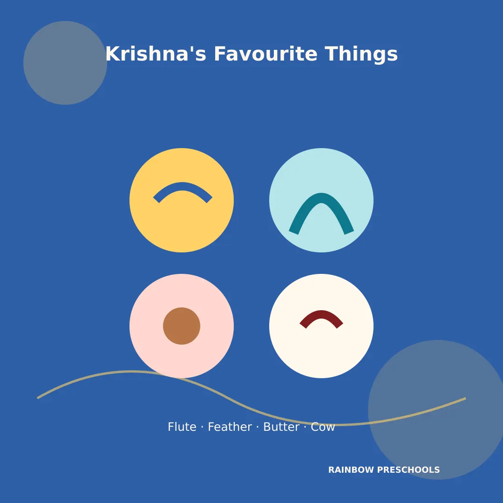
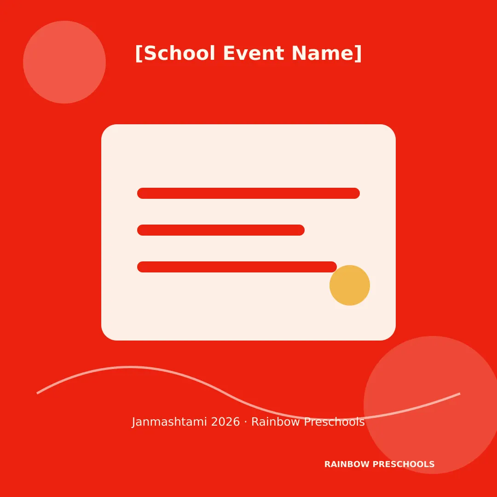
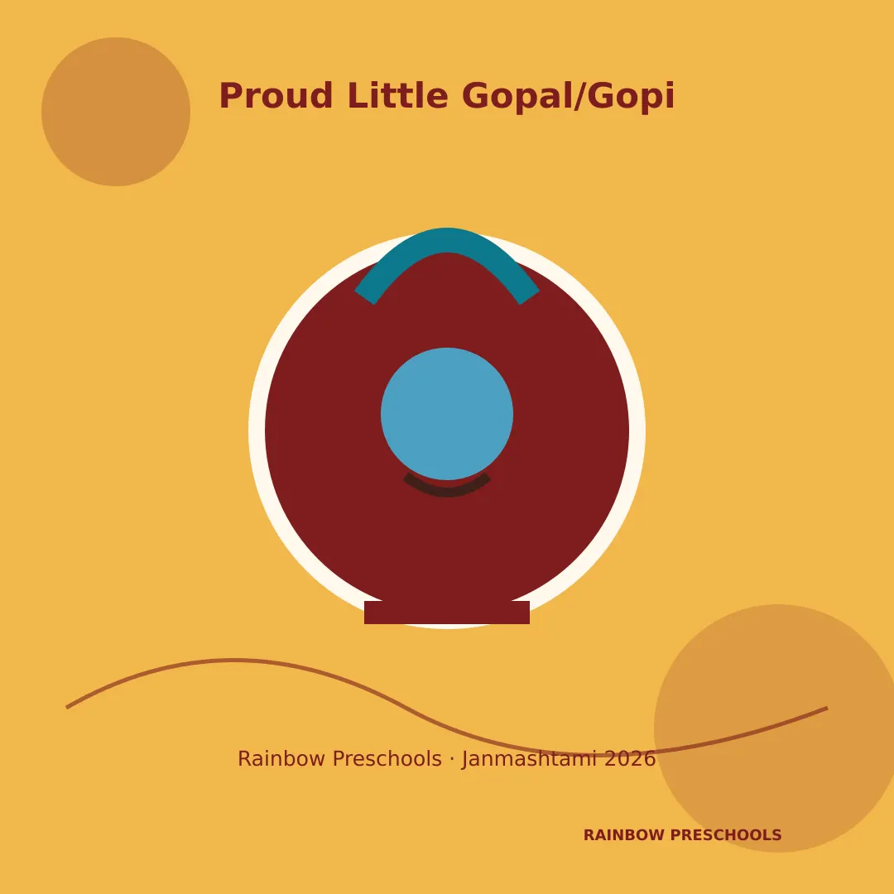
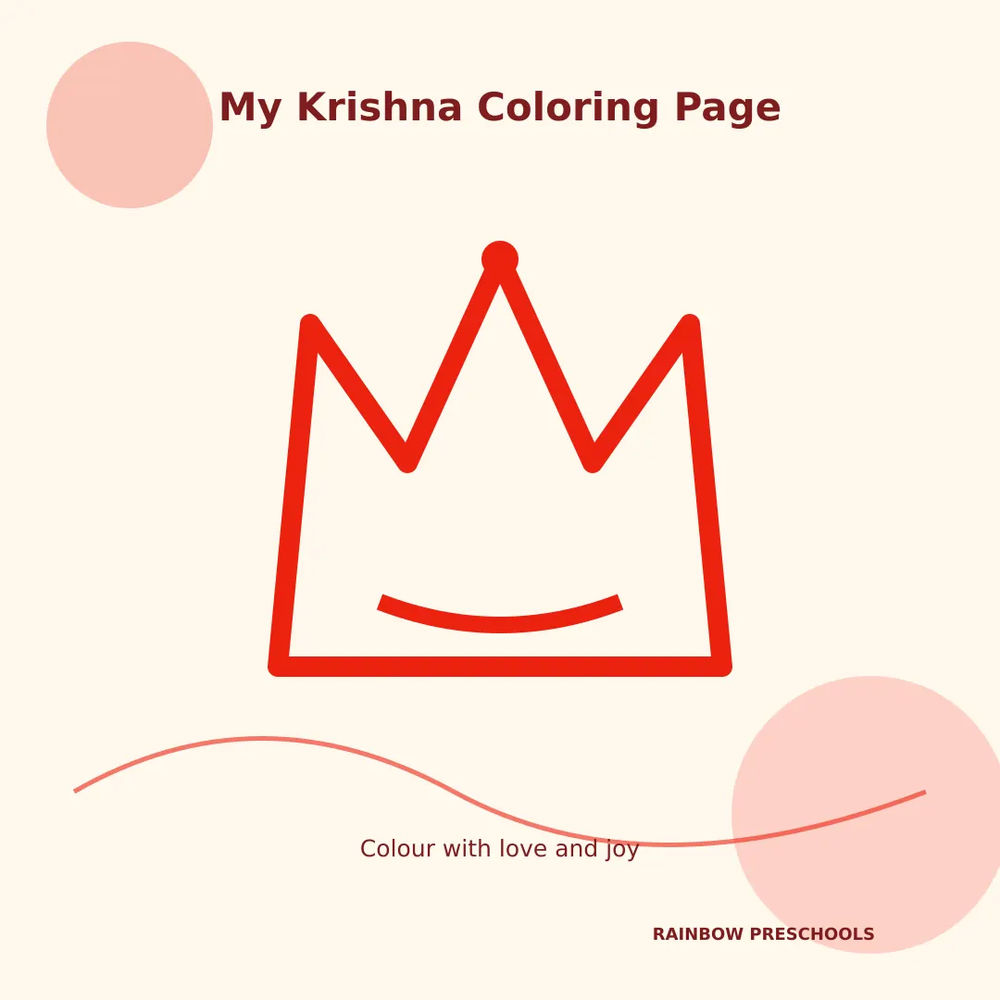

01
Peacock Feather Crown
15 minsAges 2–5
Cut a simple paper crown strip and let your little one stick colourful paper "peacock feathers" (pre-cut or hand-drawn) all around it. Pop it on for an instant Bal Gopal look!
Simple Stories, Songs, Crafts & Speeches to Help Your Little One Celebrate Bal Krishna's Birthday

“Every festival is a doorway — and the earlier we open it for our little ones, the more wonder they carry inside for a lifetime.”
At Rainbow Preschools, we believe festivals are one of the sweetest ways for tiny hearts to learn about love, sharing, and joy — long before they can read a single word. Janmashtami, the birthday of baby Krishna, is a perfect place to start. It's a festival full of the things little ones already adore: butter, babies, music, dressing up, and a bit of naughty mischief!
This guide is made just for parents and teachers of toddlers and preschoolers — with simple stories, tiny speeches, easy crafts, and sweet songs, so your little Gopal or Gopi can enjoy every bit of the celebration in a way that feels just right for their age.
“Janmashtami is baby Krishna's birthday — and everyone celebrates with songs, sweets, and dancing!”
Keep it simple and sensory — “Today we celebrate a special baby named Krishna. He loved butter, just like you love your favourite food! Let's clap and sing for his birthday.”
You can add a little more story — “A long, long time ago, a baby named Krishna was born at midnight. His parents kept him safe by taking him to a new home, where a loving mummy and daddy named Yashoda and Nanda raised him. Krishna grew up to be famous for playing a beautiful flute and for loving butter so much that people called him a little 'butter thief'!”
Families sing songs, decorate their homes, dress their little ones as baby Krishna or Radha, and stay up to celebrate at midnight — the special time Krishna is believed to have been born. In Maharashtra, there's also a fun tradition called Dahi Handi, where big teams of people build human towers to reach a pot of curd hanging up high — just like Krishna used to reach for butter pots as a little boy!
Cut a simple paper crown strip and let your little one stick colourful paper "peacock feathers" (pre-cut or hand-drawn) all around it. Pop it on for an instant Bal Gopal look!
Take a small paper cup or bowl shape, and let your child stick on brown/orange paper strips and cotton balls to look like a little curd pot. Great for fine motor skill practice.
Dip little hands in blue and green paint (washable, child-safe) and press onto paper — the handprint becomes the peacock's tail! Add a simple peacock body and a googly eye.
Decorate a cardboard tube or rolled paper with yellow and gold paint or stickers to make a pretend Bansuri (flute) — perfect for little Krishnas to "play" during family celebrations.
Cut out a simple baby Krishna shape (peacock feather, flute, and all) and turn it into a finger puppet using paper and tape — wonderful for retelling the stories in Section 5!
Read these aloud, one at a time, in your gentlest storytelling voice!
Once upon a time, on a dark and stormy night, a daddy named Vasudev had to keep his baby safe. He placed baby Krishna gently in a basket and carried him on his head, walking through a big rushing river. The rain poured and poured! But a kind, giant snake spread its hood over the basket like an umbrella, so not one drop of rain touched baby Krishna. Daddy Vasudev walked safely across and gave baby Krishna to a loving new mummy and daddy, Yashoda and Nanda, who cuddled him close and called him their own little son.
Baby Krishna LOVED butter — more than any toy! The mummies in his village would hide their butter pots up high on the ceiling so cheeky little Krishna couldn't reach them. But do you know what he did? He called his little friends, and they climbed on top of each other — just like a tiny tower — until they could reach the pot! Butter everywhere, giggles everywhere — and nobody could stay upset with his big sweet smile.
A big snake named Kaliya lived in the river and made the water yucky, so nobody could drink it. Brave little Krishna jumped right in and danced upon the snake until Kaliya promised to be gentle and swim far, far away. Now the water was clean and happy again for everyone!
One day, dark clouds rolled in and rain began to pour and pour on Krishna's village. So Krishna lifted up an entire hill — just like a great big umbrella — using only one finger! All his friends, all the cows, and all the families stayed warm and dry underneath until the storm passed.
Tap a card to turn it over.
Good morning everyone! Today is Krishna's birthday. Krishna played the flute and loved butter. Happy Janmashtami! Jai Shri Krishna!
Good morning teachers and friends! Today we celebrate Janmashtami — the birthday of baby Krishna. Krishna was a naughty and lovable baby who loved to eat butter and play his flute. He lived in a village called Gokul with his mummy Yashoda and daddy Nanda. On this day, we sing songs, dress up, and celebrate with a lot of joy. Happy Janmashtami! Jai Shri Krishna!
Good morning respected teachers and my dear friends! Today we have gathered to celebrate Krishna Janmashtami — the birthday of Lord Krishna. Krishna was born a long time ago in a place called Mathura, and he grew up in Gokul with his loving parents, Nanda and Yashoda. He is famous for playing the flute so beautifully that even birds and animals would stop to listen, and for loving butter so much that people lovingly called him 'Makhan Chor.' Krishna also taught us that being brave and kind is the best way to live. On this Janmashtami, let us remember to always be kind, brave, and loving — just like little Krishna. Thank you, and Jai Shri Krishna!
सुप्रभात! आज हम श्रीकृष्ण जन्माष्टमी मना रहे हैं। भगवान श्रीकृष्ण का जन्म मथुरा में हुआ था और वे गोकुल में नंद और यशोदा के साथ बड़े हुए। वे बांसुरी बहुत सुंदर बजाते थे और उन्हें माखन बहुत पसंद था। आइए हम सब मिलकर यह त्योहार खुशी से मनाएं। जय श्री कृष्ण!
सुप्रभात! आज आपण श्रीकृष्ण जन्माष्टमी साजरी करत आहोत. भगवान श्रीकृष्णाचा जन्म मथुरेत झाला आणि ते गोकुळात नंद व यशोदा यांच्यासोबत मोठे झाले. ते बासरी अतिशय सुंदर वाजवायचे आणि त्यांना लोणी खूप आवडायचे. चला, आपण सर्वजण हा सण आनंदाने साजरा करूया. जय श्री कृष्ण!
1. Janmashtami is Krishna's birthday.
2. Krishna was born in Mathura.
3. He grew up in Gokul with Yashoda and Nanda.
4. Krishna loved butter and played the flute.
5. We celebrate with songs, sweets, and dancing.
1. Janmashtami is a happy festival celebrating Lord Krishna's birthday.
2. Krishna was born at midnight in Mathura.
3. His parents were Devaki and Vasudeva.
4. He was raised by Nanda and Yashoda in Gokul.
5. Krishna loved to play the flute.
6. He loved butter so much, he is called "Makhan Chor."
7. Krishna wore a peacock feather in his hair.
8. On this day, people sing bhajans and decorate their homes.
9. In Maharashtra, people celebrate with Dahi Handi.
10. Janmashtami teaches us to be brave, kind, and joyful.
Janmashtami is a joyful festival that celebrates the birth of Lord Krishna. Krishna was born at midnight in Mathura to his parents, Devaki and Vasudeva. To keep him safe, he was taken to Gokul, where he was lovingly raised by Nanda and Yashoda. As a child, Krishna was famous for his mischievous love of butter, earning him the nickname "Makhan Chor." He also played the flute so beautifully that everyone loved to listen. On Janmashtami, families sing devotional songs, decorate their homes with flowers and lights, and celebrate at midnight. In Maharashtra, people also enjoy the exciting Dahi Handi tradition. Janmashtami reminds us to be brave, loving, and joyful — just like little Krishna.
(Tune: Twinkle Twinkle Little Star)
Little Krishna, dark and sweet,
Playing flute so soft, so neat.
Peacock feather in his hair,
Butter pots without a care.
Little Krishna, dance with me,
Happy as can be!
Clap your hands and sway along,
Sing this happy Krishna song!
Butter, flute, and peacock too,
Krishna's birthday, me and you!
Govinda ala re ala,
Come and dance, one and all!
मेरे कान्हा, प्यारे कान्हा,
बांसुरी बजाओ ना।
माखन खाओ, नाचो गाओ,
जन्माष्टमी मनाओ ना।
माझा कान्हा, गोड कान्हा,
बासरी वाजव ना।
लोणी खा, नाच रे,
जन्माष्टमी साजरी कर ना।
Tap any slogan to copy it.
Krishna's favourite musical instrument — he played it so beautifully!
Krishna wore this pretty feather in his hair
Krishna's favourite yummy food
Krishna loved playing with cows and calves
Krishna is often shown with beautiful blue-coloured skin
Krishna loved wearing bright yellow outfits
Dress your little one in a cute Krishna or Radha outfit, hum a Krishna song together, and let them "play" a toy flute.
Try one of the crafts in Section 4, make a simple tricolour-of-Krishna-themed snack plate (banana, cucumber sticks, yellow cheese cubes), or watch a short, age-appropriate Krishna storybook video together.
Read one of the stories from Section 5 aloud, or pick up a children's book about Krishna from your local library (Thane District Library has a lovely children's section) to extend the celebration.
Gather as a family for a simple aarti or prayer, share a small Makhan-Mishri treat, and if your little one is old enough to stay up a little later, watch (from a safe distance) or talk about the Dahi Handi celebrations happening in your neighbourhood.
There are no scary wrong answers — just keep learning and smiling!
Original, cartoon-style designs for family sharing, classroom celebrations, and colouring time.









“Our littlest Gopals are ready to celebrate! 🦚🎶 Happy Janmashtami from all of us at Rainbow Preschools!”
“Butter, flutes, and tiny feet dancing — Janmashtami at Rainbow Preschools is pure joy! 💛”
“Dress-up day, storytime, and a whole lot of giggles — here's how our little ones celebrated Bal Gopal's birthday!”
“Jai Shri Krishna! 🙏 Wishing every little one in our Rainbow family a joyful Janmashtami.”
“From tiny hands making matki crafts to tiny voices singing 'Govinda Ala Re' — today was magical. Happy Janmashtami!”
Janmashtami is the celebration of Lord Krishna's birthday — a joyful festival that little ones can enjoy through stories, songs, dress-up, and sweets.
Keep it simple: "Today is baby Krishna's birthday! He loved butter and music, and we celebrate with songs and dancing."
Yes — see Section 7 for a ready-to-use 10-15 second speech perfect for Nursery.
Simple crafts (peacock crowns, matki pots, handprint art), storytelling, dress-up as Bal Gopal or Radha, and singing simple rhymes are all wonderful, age-appropriate ways to celebrate — see Section 4.
Janmashtami 2026 is celebrated on Friday, September 4, with Dahi Handi celebrations on Saturday, September 5.
Many families dress little ones as baby Krishna (yellow outfit, peacock feather crown, small flute prop) or as Radha — comfortable, easy-to-move-in outfits work best for toddlers.
Yes — see Section 8 for 5-line, 10-line, and 100-word versions suitable for young students.
It celebrates the birth of Lord Krishna, remembered for his playful childhood, his wisdom, and the values of courage, kindness, and joy that his stories teach children.
Janmashtami is the birthday celebration itself, while Dahi Handi is a specific Maharashtrian tradition (usually the next day) where teams form human towers to break a curd pot, echoing young Krishna's love of butter.
Little ones enjoy hearing about Krishna's parents Devaki and Vasudeva, his loving foster parents Yashoda and Nanda, and his best friend Sudama.
We'd love to welcome your family! Please reach out via [Insert verified admissions contact] or use the "Enquire Now" button below to connect with our admissions team.
Playgroup to Kindergarten (ages 1.5–5.5) | Thane, Maharashtra
A safe, joyful, nurturing early-learning environment featuring experienced and caring early-years faculty, smart classrooms, a CCTV-enabled environment, 100% female staff, in-house GPS-enabled transport, and a caring student-teacher ratio of 30:2.
CBSE-affiliated, Nursery to Grade 12 | Thane, Maharashtra
For families planning ahead — a modern, academically strong school focused on holistic development, ready to welcome your little Gopal as they grow.
“The Future Begins Here” — and so does every happy memory of butter-smeared smiles, tiny flutes, and dancing feet. However your family chooses to celebrate this Janmashtami, we hope it's filled with joy, togetherness, and a little bit of Krishna's own mischief.